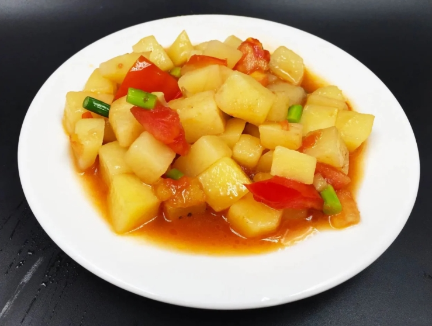
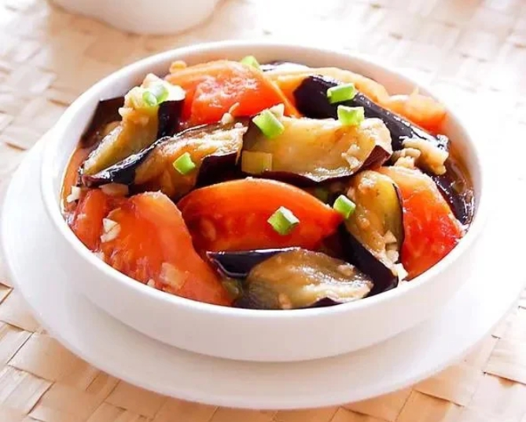
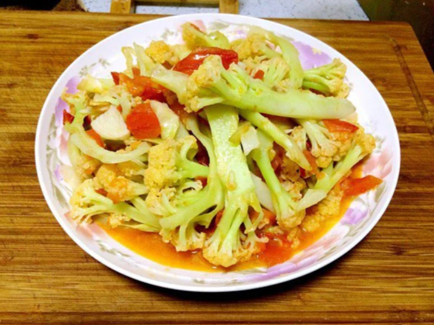
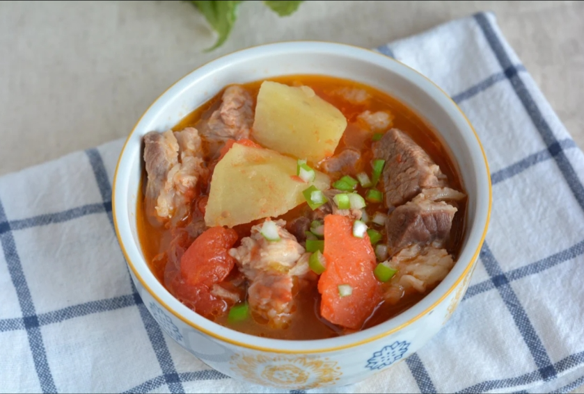
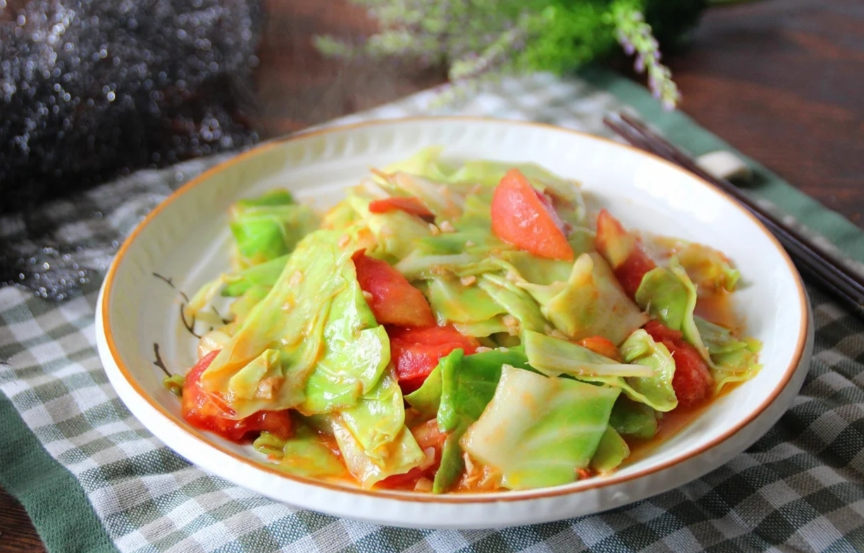

西红柿膳食搭配
西红柿的营养价值也是很高的，西红柿味甘、酸、微寒、有清热解毒，生津止渴，养阴凉血、健胃消食等作用，其中富含的番茄红素，是目前在自然界植物中发现的最强的抗氧化剂之一，所以西红柿被称为“植物中的黄金”
西红柿和什么食物搭配？才能吃出美味，吃出健康。下面就给大家分享五种西红柿最佳搭配的吃法。
Visit Website

番茄土豆丁
食材：番茄两个，土豆一个
调料：葱1根、番茄酱1勺、蚝油1勺、白糖、盐少许、食用油适量
做法：1，番茄洗净，底部切十字，放入开水中焯烫，烫至皮翘，取出后去皮，然后切成小块备用，土豆去皮切小丁，葱切成葱花。
2，锅中倒入清水烧开，放入土豆丁，煮二分钟左右捞出，控干水分备用。
3，锅中加入适量食用油，烧热，放葱花爆香，加入番茄翻炒出汁。
4，加入土豆丁、番茄酱、蚝油、生抽、白糖、盐翻炒均匀，出锅前撒上葱花即可，一道美味的番茄土豆丁就做好了，酸辣开胃又下饭。
Visit Website

西红柿炖茄子
食材：茄子一个，番茄两个
调料：葱花适量、生抽2勺、老抽半勺、蚝油1勺、糖1勺、盐少许、淀粉少许
做法：1，番茄切小块，茄子去皮洗净，切滚刀块，加适量淀粉拌匀。
2，起锅烧油，油热下茄子块，中小火煎至金黄盛出。
3，调汁：碗中加生抽2勺、老抽半勺，蚝油1勺、糖1勺、盐少许、淀粉1勺、清水4勺调匀备用。
4，锅留底油，葱花爆香，倒入番茄丁炒出汤汁，再倒入煎熟的茄子和料汁，翻炒均匀即可装盘，好吃又不油腻。
Visit Website

西红柿炒菜花
食材；西红柿1个，菜花半个
调料：白糖1勺、生抽1勺、蒜、盐各适量、食用油适量
做法：1，西红柿洗干净，切小丁，菜花掰成小块，洗干净
2，锅中烧适量的水，水开后把菜花放入烫一下，捞出控水。
3，锅中油热，加入蒜末炒出香味，加入西红柿丁翻炒均匀，加少量水。
4，加入烫过的菜花，再加入生抽、白糖、盐翻炒均匀，淋入适量水淀粉，快速翻炒均匀即可装盘。
Visit Website

西红柿牛腩炖土豆
食材：牛腩500克、西红柿两个、土豆一个
调料：料酒、葱姜蒜、花椒、大料、桂皮、香叶、盐、黄豆酱
做法：1，牛腩切成小块，放凉水中浸泡30分钟。
2，起锅烧水，加入牛肉、两片姜煮开，撇去浮沫，捞出备用。
3，炒锅放少许油，放入所有调味料煸香，倒入焯好的牛肉块翻炒。
4，加入适量的料酒，黄豆酱一勺、加入适量温水。倒入高压锅中，开炖肉档炖制。
5，土豆去皮切块，西红柿去皮切丁。
6，炒锅放少许油，放入西红柿丁及番茄酱小火煸炒，放入土豆、翻炒均匀，再倒入炖好的牛肉，小火炖至土豆软烂，加入适量的盐即可。
Visit Website

西红柿炒包菜
食材：西红柿两个，包菜半个
调料：植物油、姜末适量、食盐、味精适量
做法：1，西红柿洗净切块，包菜洗净撕成大小合适的小块。
2，起锅烧油，油热加入姜末爆香，放入番茄煸炒，再加入包菜焯透，放适量的盐，最后加点味精。炒匀即可装盘。
Visit Website